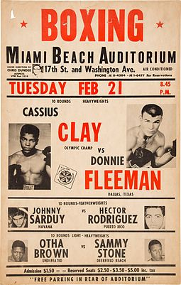

Muhammad Ali was known as "one of the best fighters in the world", with 56 wins, 3 belts, and defended his title 19 times!
Muhammad Ali was known as "one of the best fighters in the world", with 56 wins, 3 belts, and defended his title 19 times!
Muhammad Ali was known as "one of the best fighters in the world", with 56 wins, 3 belts, and defended his title 19 times!
Muhammad Ali was known as "one of the best fighters in the world", with 56 wins, 3 belts, and defended his title 19 times!
His accomplishments during his life were life lifting for some.
| Boxing | Activist |
|---|---|
|
|
His life came to a end in 2016 but not before being great friends with another fighter Mike Tyson. Early in his life, he was known as Cassius Clay. He converted to Sunni Islam just 15 years before his passing, as he believed his Christian upbring was
empty.
